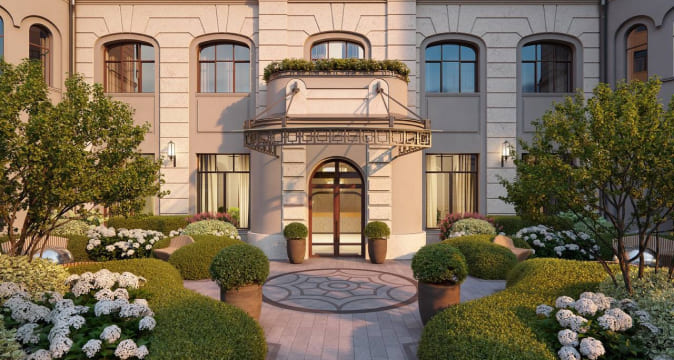

Sminex приступил к фасадным работам в клубном доме «Чистые Пруды»
Чистые пруды
Sminex приступил к фасадным работам в клубном доме «Чистые Пруды»
Девелопер реставрирует кирпичную кладку наружных стен дома, построенного в 1915 году по проекту архитектора Отто фон Дессина. Завершить фасадные работы планируется в декабре этого года. Клубный дом «Чистые пруды» расположен в глубине тихого Потаповского переулка, в 50 метрах от знаменитого одноименного пруда. Sminex продолжит бережную реставрацию здания, чтобы сохранить его изысканную...